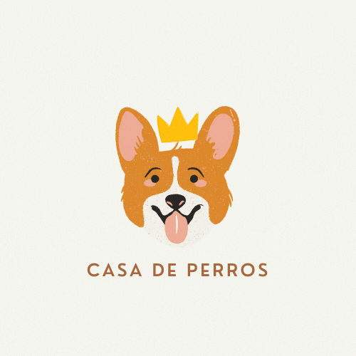

Esta pagina contiene informacion sobre la aplicacion "Casa de Perros", la cual esta enfocada en que las personas con perros las cuales necesitan dejarlos solos por unos dias tengan la posibilidad de dejarlos al cuidado de centros o voluntarios para que el perro pueda estar seguro durante esos días de soledad. Este proyecto va dirigido a toda persona que tenga un perro. Porque siempre puede pasar alguna situación en la que no tenes con quien dejar el perro. Este proyecto aplica para cualquier persona que desee tener un perro, aunque sea por un tiempo determinado. El objetivo de nuestro proyecto es conseguir que el dueño esté seguro de que el perro esté feliz y en buenas manos cuando se vaya de viaje. También darle la posibilidad a personas que tal vez no tienen la posibilidad de cuidar y criar un perro, el tener uno por un tiempo determinado. El proyecto está pensado para facilitar esta conexión entre ambos bandos, los que buscan un cuidador y los que buscan cuidar a un perro, para que se genere un lazo de confianza y así juntar a amantes de los perros. Esto para que la gente tenga de donde sacar datos para que elijan la mejor opción, y no la primera que ven o que les muestran. Además este proyecto no solo está pensado para los dueños, sino que también para que más personas amantes de los perros tengan la posibilidad de cuidar a un perro, sea por la razón que sea. Además de acercar a veterinarias y centros especializados para el cuidado a las diferentes personas que buscan sus servicios.
